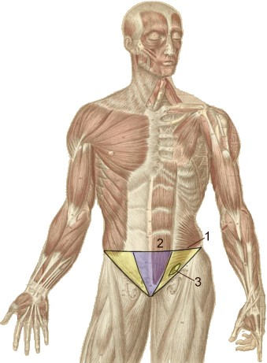
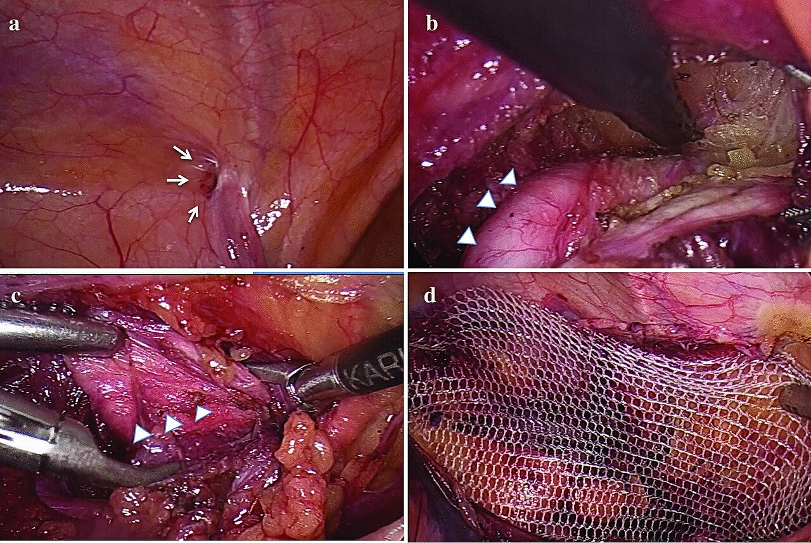
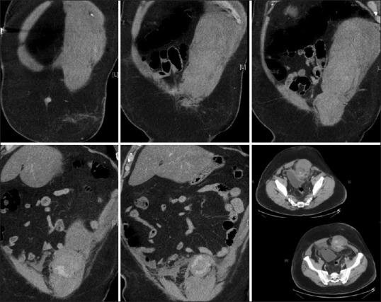
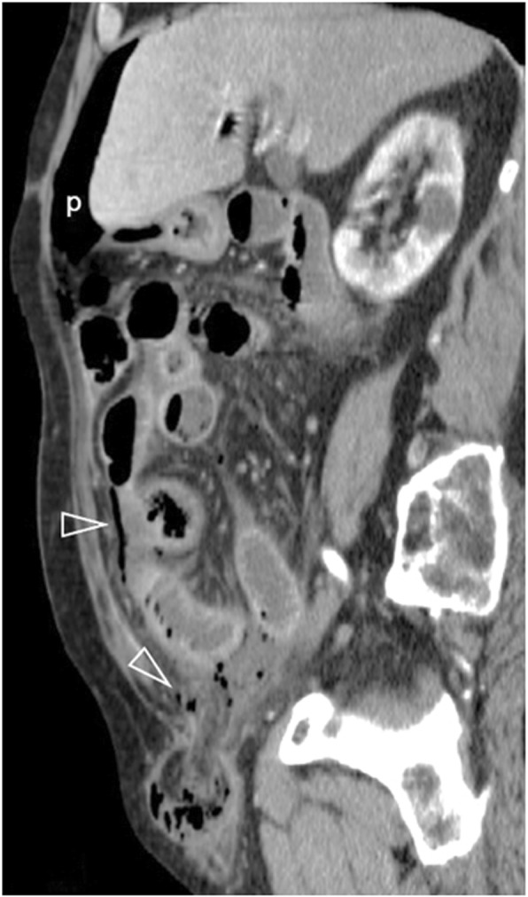
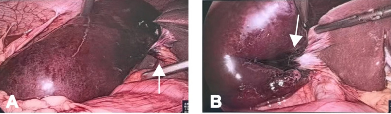

Грыжи
Определение грыжи и анатомические компоненты
Грыжа — выход внутреннего органа из анатомической полости вместе с неповреждённой брюшиной через отверстие. Выход органа через разрыв брюшины без оболочки называется эвентрацией.

Истинная грыжа содержит три элемента: грыжевые ворота, грыжевой мешок и грыжевое содержимое.
Грыжевые ворота — отверстие в мышечно-апоневротическом слое брюшной стенки (естественное: паховый канал, пупочное кольцо, запирательное отверстие; или приобретённое: после травмы, операции). Имеют округлую, овальную или щелевидную форму. Поперечный диаметр наружного отверстия пахового канала — 1,2—3 см, норма при ушивании глубокого кольца — 0,6—0,8 см. Узкие ворота с рубцовыми краями чаще вызывают ущемление. Края пахового канала и апоневроз наружной косой мышцы живота ограничивают наружное паховое кольцо, формируя ворота.
Грыжевой мешок — выпячивание париетальной брюшины, состоящее из шейки (узкая часть на уровне ворот), тела и дна. Ущемление содержимого происходит в шейке. При длительном существовании грыжи брюшинная стенка мешка утолщается и склерозируется. При операции мешок выделяют, прошивают у шейки и отсекают.
При скользящих грыжах (1—1,5 % паховых грыж) часть стенки мешка образована стенкой органа без серозного покрова (чаще слепая кишка или мочевой пузырь).
Грыжевое содержимое — чаще подвижные органы (большой сальник, тонкая и сигмовидная кишка), реже менее подвижные (восходящая ободочная кишка, мочевой пузырь). По состоянию бывает свободно вправимым, частично вправимым, невправимым или ущемлённым. Отсутствие любого из трёх компонентов указывает на эвентрацию, предбрюшинную липому или ложную грыжу.
Классификация грыж по анатомическому расположению
Грыжи делят на наружные (выход мешка через дефект брюшной стенки) и внутренние (в карманы брюшины, сальниковую сумку или отверстия диафрагмы).
Среди наружных грыж живота преобладает паховая грыжа (выход через паховый канал; 90—97 % пациентов — мужчины из-за более широкого канала; диаметр наружного отверстия — 1,2—3 см). Скользящие паховые грыжи составляют 1—1,5 % случаев.
Бедренная грыжа — выпячивание через бедренный канал ниже паховой связки (5—8 % грыж живота; чаще у женщин из-за широких лакун). Канал формируется при образовании грыжи, его кольцо узкое и жёсткое, что повышает риск ущемления.
Пупочная грыжа проходит через пупочное кольцо. Возникает у детей в первые 6 месяцев после рождения или у взрослых при повышении внутрибрюшного давления (ожирение, многократные беременности, асцит).
Редкие формы: поясничные грыжи (через треугольники Пти и Гринфельта, склонны к ущемлению), седалищные (через седалищное отверстие), запирательные (через запирательный канал, диагностируются при ущемлении с кишечной непроходимостью), промежностные (чаще у женщин). Послеоперационные грыжи возникают в области рубца после лапаротомии, травматические — при подкожном разрыве мышц, фасций и апоневроза.
| Форма грыжи | Анатомические ворота | Типичный пол / возраст | Доля среди случаев грыжи Литтре |
|---|---|---|---|
| Паховая | Паховый канал | Мужчины 90—97 %, любой возраст | 50 % |
| Бедренная | Бедренный канал | Преимущественно женщины | 20 % |
| Пупочная | Пупочное кольцо | Дети первых 6 месяцев; женщины среднего возраста | 20 % |
| Послеоперационная | Послеоперационный рубец | Оба пола, после лапаротомий | 10 % |
| Поясничная | Треугольники Пти и Гринфельта | Пожилые, оба пола | Редко, данные не систематизированы |
| Запирательная | Запирательный канал | Пожилые худые женщины | Высокий — диагноз чаще при ущемлении |
| Седалищная | Седалищное отверстие | Женщины | Высокий |
| Промежностная | Дно малого таза | Преимущественно женщины | Умеренный |
| Внутренняя | Карманы брюшины, диафрагма | Оба пола | Высокий — клиника острой непроходимости |
Грыжа Литтре в 50 % случаев встречается при паховых грыжах, по 20 % — при бедренных и пупочных, в 10 % — при послеоперационных. Бедренная грыжа ущемляется непропорционально часто относительно распространенности (5—8 %) из-за жесткости бедренного кольца. Запирательные и седалищные грыжи чаще диагностируются при ущемлении.
Клинические состояния: вправимая грыжа, невправимая грыжа (хроническое сращение содержимого с мешком, боль тупая или отсутствует, кровоснабжение сохранено, операция плановая) и ущемлённая грыжа (острое сдавление содержимого в воротах, прекращение кровотока, риск некроза, требуется экстренная операция).
Паховая грыжа: эмбриология, врождённая и приобретённые формы
Паховые грыжи преобладают у мужчин (90—97 %).

С III месяца внутриутробного развития при опускании яичка пристеночная брюшина образует влагалищный отросток (processus vaginalis peritonei). После опускания яичка он в норме зарастает. Незаращение отростка приводит к формированию врождённой паховой грыжи (выявляется у мальчиков до 1 года, является косой, ворота — глубокое паховое кольцо).
Приобретённые формы:
Косая приобретённая паховая грыжа (hernia inguinalis obliqua acquisita) входит через глубокое паховое кольцо (латеральнее нижних надчревных сосудов), проходит паховый канал рядом с семенным канатиком и выходит через наружное отверстие (1,2—3 см) в мошонку. Задняя стенка канала долго сохраняет целостность, поэтому эта форма встречается и у молодых людей. При длительном течении канал выпрямляется, а семенной канатик утолщается.
Прямая паховая грыжа (hernia inguinalis directa) выходит через ослабленную заднюю стенку пахового канала в медиальной паховой ямке (медиальнее нижних надчревных сосудов), минуя глубокое кольцо. Грыжа округлая, располагается у медиальной части паховой связки, редко опускается в мошонку, характерна для пожилых и часто бывает двусторонней.
При эндоскопии и лапароскопии ориентация проводится по нижним надчревным сосудам: латеральнее — вход косой грыжи, медиальнее — прямой.
Скользящая паховая грыжа
У 1—1,5 % пациентов с паховой грыжей часть стенки мешка образована стенкой органа, не имеющего серозного покрова (висцерального листка брюшины).

При скользящей грыже (hernia per glissementum) смещающаяся брюшина увлекает за собой орган, спаянный с предбрюшинной клетчаткой:
1. Мочевой пузырь: боковая стенка органа примыкает к медиальной стороне мешка. Симптомы: дизурия, уменьшение выпячивания после мочеиспускания.
2. Слепая кишка (расположена мезоперитонеально): её задняя стенка без серозного покрова образует латеральную стенку грыжевого мешка.
На КТ стенка органа примыкает к стенке мешка без жировой прослойки.
Интраоперационная опасность — случайное вскрытие стенки органа вместо мешка. При подозрении рассечение останавливают, вскрывают свободинную от органа часть мешка, вправляют орган, ушивают окно в брюшине и ушивают глубокое паховое кольцо до 0,6—0,8 см. При невозможности безопасного отделения сращённый фрагмент мешка оставляют на стенке органа.
Дифференциальная диагностика паховой грыжи и осмотр пахового кольца
Паховую грыжу дифференцируют с гидроцеле, варикоцеле, бедренной грыжей и крипторхизмом.
Осмотр начинают с пальпации наружного пахового кольца (поперечный диаметр в норме 1,2—3 см) и проверки кашлевого толчка — передачи давления пальцу при кашле. Положительный толчок в расширенном кольце указывает на грыжевой мешок. Отсутствие толчка при увеличенном кольце говорит о невправимой грыже или внебрюшинном образовании.
Гидроцеле — тугоэластичное образование в мошонке, чётко отграниченное от пахового кольца. Главный признак — положительная диафаноскопия (равномерное красноватое свечение). Кашлевой толчок отсутствует.
Варикоцеле — извитое образование по ходу семенного канатика. Нарастает стоя и спадается лёжа. Просвечивание и кашлевой толчок отрицательные.
Бедренная грыжа (5—8 % грыж живота) расположена ниже паховой связки и медиальнее бедренных сосудов. Кашлевой толчок положительный, но паховое кольцо свободно.
Крипторхизм (задержка яичка в паховом канале) проявляется отсутствием яичка в мошонке на стороне поражения. Кашлевой толчок и просвечивание отрицательные, образование не вправляется.
| Состояние | Локализация | Просвечивание | Кашлевой толчок | Связь с мошонкой и паховым кольцом |
|---|---|---|---|---|
| Паховая грыжа | Выше паховой связки, по ходу пахового канала | Отрицательное (кишка, сальник не пропускают свет) | Положительный (палец в наружном кольце ощущает толчок) | Может опускаться в мошонку; кольцо расширено |
| Гидроцеле | Мошонка; чётко отграничено от пахового кольца | Положительное (равномерный красноватый свет) | Отсутствует | Не продолжается в канал; яичко в мошонке |
| Варикоцеле | По ходу семенного канатика | Отрицательное | Отсутствует | Нарастает стоя, спадается лёжа; яичко в мошонке |
| Бедренная грыжа | Ниже паховой связки, медиальнее бедренных сосудов | Отрицательное | Положительный, но не в паховом кольце | В мошонку не опускается; паховое кольцо свободно |
| Крипторхизм с заворотом | Паховый канал | Отрицательное | Отсутствует | Яичко отсутствует в мошонке — главный признак |
После грыжесечения глубокое паховое кольцо ушивают до нормы — 0,6—0,8 см. При косой грыже кольцо расширено, при прямой — ослаблена задняя стенка канала. Пальпация кольца и кашлевой толчок — обязательная пара при осмотре.
Методы пластики пахового канала и бедренного кольца
| Метод | Укрепляемая стенка | Материал | Типичные показания |
|---|---|---|---|
| Бобров–Жирар / Спасокукоцкий / Кимбаровский | Передняя | Собственные ткани (апоневроз, мышцы) | Косая паховая грыжа, молодые пациенты с крепкими тканями |
| Бассини | Задняя | Собственные ткани (мышцы, поперечная фасция) | Прямая паховая грыжа, большие косые грыжи с ослабленной задней стенкой |
| Лихтенштейн | Задняя (ненатяжно) | Синтетическая сетка | Прямые и косые паховые грыжи любого возраста, рецидивные грыжи |
| Лапароскопическая герниопластика (TAPP/TEP) | Задняя (предбрюшинно) | Синтетическая сетка | Двусторонние паховые грыжи, рецидивы, бедренные грыжи |
Пластика передней стенки применяется при косых грыжах у молодых пациентов с крепкими тканями. Метод Боброва–Жирара подшивает мышцы и апоневроз к паховой связке в два слоя; Спасокукоцкий захватывает оба слоя в один шов; Кимбаровский подворачивает апоневроз, сшивая одноимённые ткани. Глубокое кольцо ушивают до 0,6–0,8 см.
Бассини укрепляет заднюю стенку: под семенным канатиком к паховой связке подшивают внутреннюю косую и поперечную мышцы с поперечной фасцией. Метод показан при прямых и больших косых грыжах.
Ненатяжная пластика по Лихтенштейну заключается в укладке синтетической сетки позади канатика без натяжения (рецидивы не более 0,2 %). Применяется при любых паховых грыжах, особенно у пожилых.
Лапароскопическая герниопластика (TAPP/TEP) — предбрюшинная укладка сетки, закрывающая косую, прямую и бедренную ямки (рецидивы не более 2 %). Метод идеален при двусторонних, рецидивных и бедренных грыжах.
Бедренная грыжа
Бедренная грыжа составляет 5—8 % грыж живота и выходит ниже паховой связки в области бедренного треугольника.
Пространство под паховой связкой делится на мышечную лакуну (подвздошно-поясничная мышца, бедренный нерв) и сосудистую лакуну (бедренные артерия и вена). В медиальном углу сосудистой лакуны находится бедренное кольцо шириной 1—2 см с узлом Пирогова—Розенмюллера. Его границы: паховая связка (спереди), лонная кость (снизу), лакунарная связка (медиально), бедренная вена (латерально). Через него грыжевой мешок проходит по бедренному каналу к овальной ямке. Чаще встречается у женщин.
Узкие и жёсткие стенки кольца вызывают раннее ущемление. Поэтому бедренная грыжа подлежит плановому оперативному лечению сразу после постановки диагноза.
Дифференциация проводится по уровню (ниже паховой связки), пальпации (липома бедренного треугольника дольчатая, без кашлевого толчка) и сосудистым признакам (тромбоз узла большой подкожной вены сочетается с варикозом голени).
Оперативный доступ — паховый или бедренный. При паховом доступе мешок выводят из бедренного канала, а ворота закрывают подшиванием внутренней косой, поперечной мышц и поперечной фасции к верхней лобковой и паховой связкам с дубликатурой апоневроза наружной косой мышцы.
Пупочная грыжа у детей и редкие локализации (поясничные, запирательные)
У детей после отпадения пуповины пупочное кольцо (фиброзное отверстие в белой линии живота) должно зарасти. При задержке этого процесса под кожу выпячивается грыжевой мешок. До 4 лет показано наблюдение. Если к 5 годам самостоятельного заращения не произошло, требуется операция. Экстренное показание к ней в любом возрасте — ущемление, относительное — быстрый рост выпячивания.
При небольшом кольце применяют кисетный шов вокруг его краёв — метод Лексера (Lexer). При больших грыжах используют методы Сапежко–Мейо (Sapezhko–Mayo) с формированием дубликатуры апоневроза (поперечно по Мейо или продольно по Сапежко). У детей важно сохранить пупок.
Поясничная грыжа (hernia lumbalis) выходит через треугольник Пти (trigonum lumbale Petiti: гребень подвздошной кости, наружная косая, широчайшая мышца спины, дно — внутренняя косая) или четырёхугольник Лесгафта–Грюнфельда (spatium lumbale superius: XII ребро, нижняя зубчатая, длинные мышцы спины, внутренняя косая). Поясничные грыжи склонны к ущемлению и требуют срочной операции (пластика поясничной или ягодичной фасцией). Дифференцируют их с абсцессом и опухолью.
Запирательная грыжа (hernia obturatoria) выходит через запирательный канал. Типичный пациент — пожилая худощавая женщина. Диагностический признак: боль и парестезии по внутренней поверхности бедра, усиливающиеся при отведении или ротации ноги из-за сдавления запирательного нерва. Диагноз часто ставят только при ущемлении и кишечной непроходимости. Лечение — лапаротомия с ушиванием ворот изнутри.
| Локализация | Грыжевые ворота | Типичные особенности | Метод пластики |
|---|---|---|---|
| Пупочная (дети) | Пупочное кольцо — дефект апоневроза белой линии | Часто закрывается самостоятельно до 5 лет; при ущемлении или росте — операция в любом возрасте | Малые дефекты — кисетный шов (Лексер); большие — дубликатура апоневроза (Сапежко–Мейо) |
| Поясничная | Треугольник Пти и пространство Лесгафта–Грюнфельда — промежутки задней брюшной стенки | Склонны к ущемлению; дифференцировать от абсцесса и опухоли | Закрытие поясничной или ягодичной фасцией |
| Запирательная | Запирательный канал между запирательной мембраной и костями таза | Пожилые худощавые женщины; боль и парестезии по внутренней поверхности бедра; диагноз часто при ущемлении | Лапаротомия, ушивание ворот изнутри |
На пупочные грыжи приходится 20 % случаев грыжи Литтре. Ключевой вывод раздела: редкие локализации грыж опасны именно своей атипичностью — поясничные и запирательные диагностируют поздно, нередко уже при ущемлении, тогда как пупочная у детей требует не спешки с операцией, а терпеливого наблюдения до пятилетнего возраста.
Виды ущемления грыжи: эластическое и каловое
Различают эластическое ущемление и каловое ущемление.

При эластическом ущемлении скачок внутрибрюшного давления (подъём тяжести, кашель, натуживание) выталкивает органы через перерастянутые ворота, после чего они возвращаются к исходному размеру и сдавливают содержимое снаружи. Ишемия развивается быстро.
При каловом ущемлении сдавление идет изнутри наружу: приводящий отдел петли переполняется содержимым, раздувается и давит на отводящий отдел и ворота. Компрессия и ишемия нарастают постепенно (часы или сутки).
Цепочки событий:
При эластическом ущемлении: (1) резкий скачок внутрибрюшного давления → (2) перерастяжение грыжевых ворот → (3) избыточный объём органов выходит в грыжевой мешок → (4) ворота возвращаются к исходному размеру → (5) наружное кольцевое сдавление → (6) быстрая ишемия.
При каловом ущемлении: (1) переполнение приводящей петли кишечным содержимым → (2) нарастающее давление изнутри грыжевого мешка → (3) постепенное сдавление отводящего отдела и брыжейки → (4) медленно нарастающая ишемия.
Грыжа Литтре в 50 % случаев встречается при паховых грыжах, в 20 % — при пупочных и столько же при бедренных. На СКТ свободный газ (пневмоперитонеум) при ущемлённой паховой грыже указывает на перфорацию или некроз.
Итог раздела простой: эластическое ущемление развивается быстро и даёт яркую клиническую картину с первых минут, каловое — медленно, и именно поэтому нередко диагностируется с опозданием, уже на стадии некроза.
Ретроградное ущемление, пристеночное ущемление и грыжа Литтре
Ретроградное ущемление: в мешке лежат две петли кишки, а третья (связующая) остаётся в брюшной полости (в форме буквы W). Сдавление брыжейки наиболее сильно в связующей петле, и некроз начинается в ней. Обязательна ревизия всех трёх петель.
Пристеночное ущемление (ущемление Рихтера): сдавливается только противоположная брыжейке часть стенки кишки. Просвет полностью не перекрывается, поэтому кишечная непроходимость не развивается. Боль в животе наблюдается до 90 % случаев. Чаще возникает при малых воротах (бедренные, паховые грыжи). Опасно некрозом и перфорацией с местным перитонитом.
Грыжа Литтре: содержит дивертикул Меккеля (расположен в 40–60 см от илеоцекального угла). Ведёт себя как пристеночная грыжа, не вызывая непроходимости. Частота локализаций грыжи Литтре: паховые — 50 %, пупочные и бедренные — по 20 %, послеоперационные — 10 %. Диагностируется интраоперационно; при некрозе дивертикула выполняют его резекцию.
Общий вывод из трёх разобранных форм таков: отсутствие кишечной непроходимости не исключает ущемления.
Патоморфология ущемлённой кишки и мнимое вправление
Грыжевые ворота сдавливают кишку ущемляющим кольцом. Сначала пережимаются вены, образуется странгуляционная борозда. В мешке накапливается грыжевая вода: прозрачный транссудат при некрозе становится тёмным и гнилостным.

Жизнеспособная кишка розовая, перистальтирует, с пульсацией брыжейки. Гангрена кишки: стенка тёмно-фиолетовая или чёрная, дряблая, перистальтика и пульсация отсутствуют. Некроз начинается со слизистой оболочки уже через несколько часов, тогда как серозный покров гибнет позже.
При насильственном вправлении возникает мнимое вправление: содержимое вместе с ущемляющим кольцом смещается в предбрюшинное пространство или брюшную полость (при отрыве шейки мешка от париетальной брюшины). Выпячивание исчезает, но сдавление и некроз сохраняются.
Главное, что следует вынести из этого раздела: некроз при ущемлении начинается со слизистой — задолго до того, как серозный покров изменит цвет, — и мнимое вправление устраняет только видимый симптом, но не саму катастрофу.
Операция при ущемлённой грыже: этапность и тактические решения
Операция начинается не с освобождения, а с фиксации содержимого, чтобы предотвратить уход некротизированной петли в брюшную полость.
Первый этап — послойное рассечение тканей и вскрытие грыжевого мешка до рассечения ущемляющего кольца под контролем удержания петли (во избежание вынужденной лапаротомии).
Второй этап — удаление грыжевой воды и оценка жизнеспособности кишки по трём признакам: цвет (розовый — жизнеспособная, тёмно-фиолетовый/чёрный — гангренозная), перистальтика (реакция на тёплый физраствор), пульсация сосудов брыжейки. Странгуляционная борозда допустима при сохранности остальных признаков.
Третий этап: при жизнеспособности кишку согревают и погружают; при некрозе выполняют резекцию кишки с анастомозом (с запасом не менее 30–40 см приводящей и 15–20 см отводящей петли). При ретроградном ущемлении обязателен осмотр всей дуги и связующей петли в брюшной полости.
При флегмоне грыжевого мешка тактика меняется: первым этапом выполняют срединную лапаротомию (резекция кишки, анастомоз/стома), и только затем вскрывают флегмону и удаляют мешок. При флегмоне пластика не делается (во избежание нагноения), ворота ушивают минимально от эвентрации.
В остальных случаях ущемляющее кольцо рассекают под контролем зрения, мешок ушивают и проводят пластику (при паховой грыже кольцо ушивают до 0,6—0,8 см).
Грыжи диафрагмы: классификация и врождённые формы
Диафрагмальная грыжа — перемещение брюшных органов в грудную полость через дефект диафрагмы. Наличие париетальной брюшины (мешка) определяет истинный или ложный характер грыжи. По происхождению их делят на травматические и нетравматические (4 группы, сводимые в Таблицу 1).
| Форма | Локализация дефекта | Грыжевой мешок | Типичное содержимое | Клиника |
|---|---|---|---|---|
| Ложная врождённая (грыжа Бохдалека) | Пояснично-рёберный треугольник (щель Богдалека), чаще слева | Отсутствует | Тонкая и толстая кишка, желудок, селезёнка, реже печень | Дыхательная недостаточность с рождения, цианоз, «ладьевидный» живот |
| Истинная грыжа слабой зоны (ретростернальная: Ларрея, Морганьи) | Грудино-рёберный треугольник: слева — грыжа Ларрея, справа — грыжа Морганьи | Есть | Сальник, поперечная ободочная кишка, предбрюшинная клетчатка | Тупые боли и выбухание в эпигастрии, симптомы непостоянны |
| Агенезия / аплазия диафрагмы; грыжа купола | Весь купол или его большая часть | Отсутствует (агенезия) / есть (грыжа купола) | Все органы брюшной полости | Тяжёлая дыхательная недостаточность, гипоплазия лёгкого |
| Грыжи естественных отверстий (пищеводного и др.) | Пищеводное отверстие, щель симпатического нерва, отверстие нижней полой вены | Есть (параэзофагеальные), частично (скользящие) | Желудок, кишечник, сальник | Рефлюкс, дисфагия; при параэзофагеальных — риск ущемления |
Грыжа Бохдалека
Грыжа Бохдалека — ложная врождённая грыжа без мешка через щель Богдалека (закрывается к концу 2-го месяца развития). В 80–85 % случаев левосторонняя (правый купол прикрыт печенью). Содержимое: кишечник, желудок, селезёнка. Причина смертности — двусторонняя внутриутробная гипоплазия лёгких из-за компрессии. Клиника: цианоз, тахипноэ, «ладьевидный» живот, перистальтика над грудной клеткой. Лечение — экстренное низведение органов и ушивание дефекта.
Ретростернальные грыжи: Ларрея и Морганьи
Ретростернальная грыжа — истинная грыжа слабой зоны (грудино-рёберного треугольника) с мешком и узкими воротами. Различают левостороннюю (грыжу Ларрея) и правостороннюю (грыжу Морганьи). Содержимое: сальник, ободочная кишка, жировая клетчатка. Проявляется тупыми болями в эпигастрии; при ущемлении — интенсивные боли, тошнота, задержка стула. Операция: низведение органов, отсечение мешка, П-образные швы на края дефекта.
Агенезия диафрагмы и грыжа купола
Агенезия диафрагмы — полное отсутствие купола (без мешка); грыжа купола диафрагмы — выпячивание истончённого купола вместе с органами (мешок образован диафрагмой). Обе формы ведут к дыхательной недостаточности с рождения и гипоплазии лёгкого. Агенезия требует пластики синтетическим материалом или лоскутом, грыжа купола — ушивания собственной ткани.
Пренатальная диагностика и прогностические маркёры
УЗИ в 18–20 недель выявляет петли кишки в грудной клетке и смещение сердца. Прогноз оценивают по лёгочно-головному отношению (lung-to-head ratio, LHR = площадь сечения контралатерального лёгкого / окружность головки плода; чем ниже LHR, тем тяжелее гипоплазия) и по смещению печени в грудную полость (резко повышает летальность).
Грыжа пищеводного отверстия диафрагмы: классификация, диагностика, лечение
Грыжа пищеводного отверстия диафрагмы (ГПОД) возникает при расширении мышечной щели пищевода и смещении брюшных органов в средостение.
Классификация
Скользящая (аксиальная) грыжа ПОД — смещение кардии и абдоминального пищевода в грудную полость. Вызывает рефлюкс-эзофагит (воспаление слизистой). Степени по Петровскому–Каншину: I — смещён абдоминальный пищевод; II — смещена и кардия; III (кардиофундальная) — смещено дно или весь желудок (тотальная грыжа).
Параэзофагеальная грыжа — кардия фиксирована под диафрагмой, а дно/антральный отдел желудка выпячивается рядом в средостение. Опасна высокими рисками перекрута и ущемления.
| Признак | Скользящая (аксиальная) | Параэзофагеальная |
|---|---|---|
| Положение кардии | Смещена в грудную полость | Фиксирована под диафрагмой |
| Грыжевое содержимое | Абдоминальный пищевод, кардия, дно желудка | Дно/антрум желудка, кишка, сальник |
| ГЭРБ | Закономерна | Нетипична |
| Риск ущемления | Минимален | Высокий |
| Тактика | Консервативная при неосложнённой | Операция всем больным |
Диагностика
Диагностика основывается на рентгеноскопии с барием в трёх положениях (вертикальное, горизонтальное, положение Тренделенбурга). Признаки скользящей грыжи: складки слизистой желудка выше диафрагмы, тупой угол Гиса, обратный заброс контраста в пищевод. ЭГДС дополняет метод, оценивая степень эзофагита и осложнения.
Лечение скользящей ГПОД
При неосложнённой грыже проводят консервативную терапию (подъём изголовья, диета, снижения веса, антациды, ИПП). Хирургическое лечение показано при кровотечениях, стриктурах и неэффективности медикаментов. Операция выбора — фундопликация по Ниссену (манжета из дна желудка на 360° вокруг пищевода). Порядок этапов: мобилизация пищевода, низведение кардии, сближение ножек диафрагмы (крурорафия), формирование манжеты.
Лечение параэзофагеальной ГПОД и ущемлённых грыж
При параэзофагеальной ГПОД операция показана всем больным: низведение органов, крурорафия и при необходимости фундопликация. Ущемлённая грыжа требует экстренной операции: трансабдоминальной (на ранних сроках) или трансторакальной (при длительном ущемлении/некрозе). Некроз стенки органа ведет к пиопневмотораксу — тяжёлому осложнению с высокой летальностью.
Источники
- Госпитальная хирургия. Синдромология. Миланов 2013
- Хирургические болезни. Кузин
Иллюстрации
- Wikimedia Commons, PUBLIC DOMAIN, https://commons.wikimedia.org/wiki/File%3ADr_Bock_plate11a.jpg
- Wikimedia Commons, CC BY 4.0, https://commons.wikimedia.org/wiki/File%3AHydrocele_of_canal_of_Nuck._Intraoperative_photos.jpg
- Europe PMC, CC BY-NC-SA, https://europepmc.org/article/PMC/PMC4613419
- Wikimedia Commons, CC BY-SA 4.0, https://commons.wikimedia.org/wiki/File%3AInkarzerierte_Schenkelhernie_rechts_mit_Ileus_81W_-_CT_-_001_-_Annotation.jpg
- Wikimedia Commons, CC BY-SA 4.0, https://commons.wikimedia.org/wiki/File%3AInkarzerierte_Schenkelhernie_rechts_mit_Ileus_81W_-_CT_coronar_KM_pv_-_Serie.gif
- Europe PMC, CC BY, https://europepmc.org/article/PMC/PMC7035412
- Europe PMC, CC BY, https://europepmc.org/article/PMC/PMC12554376
- Europe PMC, CC BY, https://europepmc.org/article/PMC/PMC11969058
- Europe PMC, CC BY-NC-ND, https://europepmc.org/article/PMC/PMC13471648
- Europe PMC, CC BY, https://europepmc.org/article/PMC/PMC12493131
- Europe PMC, CC BY-NC, https://europepmc.org/article/PMC/PMC12305281